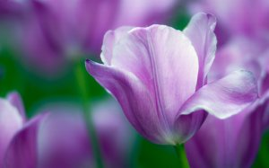
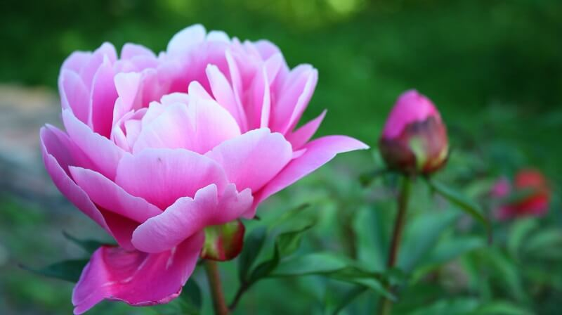

Тюльпан

- Теневыносливые
- Семейство: лилейные
- Род тюльпанов насчитывает до 140 видов
- Луковичное растение
- Посадка: Они любят солнечные и защищенные от ветра и сквозняков места. Если среда не подойдет цветам, то питательные вещества в луковицах не будут образовываться в достаточном количестве и головки цветочков будут поникшими. Почва должна быть жирной и рыхлой, поэтому перед высадкой в открытый грунт ее нужно удобрить перегноем. Посадку растения проводят в начале октября, некоторые сорта сажают в конце сентября. Цвести начинает с конца апреля, и радует нас своими изящными цветами до начала июня.
- Листья у тюльпанов растут от основания надземной части до середины стебля. Нижние листья крупные, удлиненно-ланцетные или широко овальные, часто с волнистым краем, иногда серповидно изогнуты; верхние — значительно мельче. Количество листьев от 2 до 6. Окраска от ярко-зеленого до сизого тона. У некоторых дикорастущих видов и их садовых форм листья с верхней стороны имеют фиолетово-бурые пятна.
- Цветки состоят из шести свободных опадающих долей околоцветника и имеют яркую окраску самых разнообразных тонов. Форма цветка бывает простая колокольчатая, воронковидная, звездчатая.
|
Пион

- Теневыносливый
- Семейство: Пионовые
- Посадка : Эти растения очень светолюбивы, боятся сквозняков и холодных ветров. Поэтому сажать их надо на солнечном, хорошо защищенном от ветра месте. Посаженные в тени, пионы будут плохо расти и цвести. Некоторые сорта могут вообще не образовывать бутонов. Почвы пионам нужны очень плодородные, богатые органикой, рыхлые с нейтральной реакцией). Кислые – этим растениям вообще противопоказаны. Но месяц цветения один – июнь. Ранние сорта начинают покрываться бутонами в конце мая и продолжают цвести до 10 июня. Со средними сроками цветения – до 20 числа, поздние – заканчивают в последних числах июня.
- Цветки диаметром до 15—25 см, одиночные, с чашечкой и венчиком.
- Листья непарно перистораздельные или тройчатые, с широкими или узкими долями, тёмно-зелёные, реже сизые, осенью жёлтые, бурые, красноватые или тёмно-фиолетовые.
|